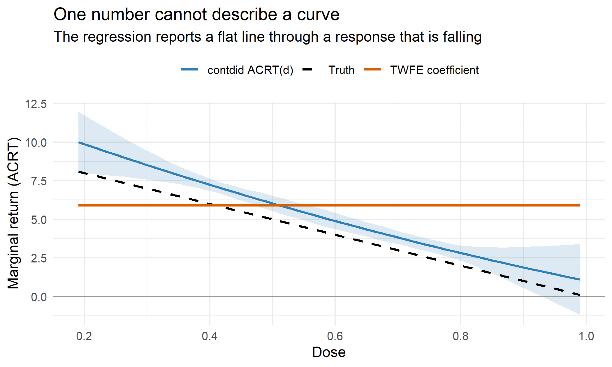

Difference-in-Differences With a Continuous Treatment in R: The Dose Coefficient Is Not Marginal ROI
When treatment is a dose rather than a switch, the fixed effects coefficient answers a question nobody asked.
Most measurement questions are not “did we run the campaign.” They are “we spent somewhere between two and forty thousand dollars per market, so what did the next dollar buy.” That is difference-in-differences with a continuous treatment, and the obvious move is to put spend on the right-hand side of a two-way fixed effects regression and read the coefficient as marginal return.
That coefficient is not marginal return. On data where I chose the true answer myself, it misses by 31%, and there is no confounding anywhere in the simulation to blame it on.
A dose where the truth is known
Four thousand markets, four periods, treatment switching on in period 3. Sixty percent of markets get a spend increase drawn uniformly between 0.1 and 1.0, and the rest get nothing and serve as controls.
The important detail is that I assign the dose at random. No market chooses its budget, so there is no selection, no reverse causality, and no correlation between spend and pre-existing trends. Every problem below survives in a world where the dose was randomized.
The true response to dose is concave, which is just the formal way of saying diminishing returns:
library(contdid)
library(fixest)
library(dplyr)
set.seed(20260825)
n_mkt <- 4000
# 40% of markets get nothing. The rest get a random spend increase.
dose <- ifelse(rbinom(n_mkt, 1, 0.6) == 1, runif(n_mkt, 0.1, 1.0), 0)
mkt_fe <- rnorm(n_mkt, mean = 100, sd = 10)
# TRUE dose-response and its derivative
att_fn <- function(d) 10 * d - 5 * d^2 # effect of dose d versus zero
acrt_fn <- function(d) 10 - 10 * d # marginal return at dose d
# Draw the noise once so later variations differ only in the response shape
noise <- rnorm(n_mkt * 4)
panel <- expand.grid(id = 1:n_mkt, t = 1:4) |>
mutate(
dose = .env$dose[id],
g = ifelse(dose > 0, 3, 0), # period of first treatment
post = as.integer(t >= 3 & dose > 0),
y = mkt_fe[id] + 2 * t + post * att_fn(dose) + .env$noise,
dose_post = dose * post
)Two numbers describe the truth, and they are not the same number.
treated_dose <- dose[dose > 0]
c(mean_ATT = mean(att_fn(treated_dose)), # average effect of the spend that happened
mean_ACRT = mean(acrt_fn(treated_dose))) # average marginal return to one more unit
## mean_ATT mean_ACRT
## 3.650137 4.512328The first is the average effect of the spend versus not spending. The second is the average slope, which is what “what did the next dollar buy” actually means. Now the regression everyone runs:
twfe <- feols(y ~ dose_post | id + t, data = panel)
twfe
## OLS estimation, Dep. Var.: y
## Observations: 16,000
## Fixed-effects: id: 4,000, t: 4
## Standard-errors: IID
## Estimate Std. Error t value Pr(>|t|)
## dose_post 5.9044 0.047895 123.279 < 2.2e-16 ***
## ---
## Signif. codes: 0 '***' 0.001 '**' 0.01 '*' 0.05 '.' 0.1 ' ' 1
## RMSE: 0.877639 Adj. R2: 0.990841
## Within R2: 0.558868The coefficient is 5.90. The true average marginal return is 4.51. The regression overstates the return on the next dollar by 31%, on randomized data.
The weights, not the confounding
Callaway, Goodman-Bacon, and Sant’Anna set this out in a paper that has circulated as
NBER working paper 32117 and reached CRAN as the
contdid package on 2026-07-21.
Their point separates two things that a single regression coefficient blurs together.
ATT(d) is the effect of receiving dose d rather than zero. ACRT(d), the average causal
response, is its derivative: the payoff to a marginal increase at dose d. When treatment is a
binary switch these collapse into one quantity. When treatment is a dose they do not, and the
fixed effects coefficient estimates neither of them.
What it estimates is a weighted average of ACRT(d) across doses, with weights determined by
the variance of the dose variable rather than by how much spend actually sat at each level.
Those weights lean on the middle of the dose distribution and underweight the tails. If
ACRT(d) is the same everywhere, any set of weights averaging to one returns the right answer
and nothing goes wrong. If ACRT(d) varies with dose, the weights bite.
ACRT(d) is constant only when the dose-response is a straight line. So the condition that
makes the regression trustworthy is the absence of diminishing returns, which is usually the
thing the analysis was commissioned to measure.
The direction of the error follows the curvature:
bias_check <- function(att_fn, acrt_fn, label) {
p <- expand.grid(id = 1:n_mkt, t = 1:4) |>
mutate(dose = .env$dose[id],
post = as.integer(t >= 3 & dose > 0),
y = mkt_fe[id] + 2 * t + post * att_fn(dose) + .env$noise,
dose_post = dose * post)
b <- coef(feols(y ~ dose_post | id + t, data = p))[["dose_post"]]
truth <- mean(acrt_fn(treated_dose))
data.frame(shape = label, twfe = round(b, 3), truth = round(truth, 3),
error_pct = round(100 * (b / truth - 1), 1))
}
rbind(
bias_check(function(d) 10 * d - 5 * d^2, function(d) 10 - 10 * d, "concave"),
bias_check(function(d) 6 * d, function(d) rep(6, length(d)), "linear"),
bias_check(function(d) 2 * d + 4 * d^2, function(d) 2 + 8 * d, "convex")
)
## shape twfe truth error_pct
## 1 concave 5.904 4.512 30.9
## 2 linear 5.994 6.000 -0.1
## 3 convex 5.265 6.390 -17.6Concave dose-response, the case every media mix deck assumes, pushes the coefficient above the truth. Convex pulls it below. Linear is the only shape the regression handles, and there the small residual gap is sampling noise: averaged over 200 replications the linear case returns 5.9991 against a truth of 6.
The practical reading is uncomfortable. If returns diminish and you measure them with a spend coefficient, the estimate is biased toward telling you to spend more.
What contdid does instead
The package estimates the whole ATT(d) curve and its derivative rather than compressing them
into one slope, and it reports the aggregate with the weights you would have chosen yourself.
cd <- cont_did(
yname = "y", dname = "dose", gname = "g", tname = "t", idname = "id",
data = panel,
target_parameter = "slope", # "level" for ATT(d), "slope" for ACRT(d)
aggregation = "dose",
treatment_type = "continuous",
dose_est_method = "parametric", # B-spline. Use "cck" for nonparametric.
control_group = "nevertreated",
num_knots = 0, degree = 3, biters = 200
)
c(ACRT = cd$overall_acrt, ATT = cd$overall_att)
## ACRT ATT
## 4.608057 3.6370104.61 against a truth of 4.51, and 3.64 against a truth of 3.65. The regression that ignores curvature returned 5.90.
num_knots is the one dial worth understanding. It buys flexibility in the shape at the cost
of much wider tails, and on a smooth response like this one the extra knots mostly buy noise.
I used none.
The aggregate is the least interesting output, though. The curve is the thing you actually want, because it tells you where the next dollar should go:

The dashed line is the truth, the blue line is contdid with a uniform confidence band, and the
orange line is the fixed effects coefficient, which is flat by construction. The estimate runs a
little above the truth and its band widens at both ends, which is the honest report of how
little data sits out there. The shape is right, and the shape is what the budget question needs.
The flat orange line crosses the truth at a dose near 0.4 and stays above it from there. At the top of the range it still reports a marginal return close to 5.9, where the real one has fallen to roughly zero. That is the gap that funds a campaign extension nobody should have approved.
One caveat that makes real data worse
Everything above happened under randomized dose. Real spend is chosen, and larger markets tend to get larger budgets for reasons that also drive their trends. That adds a second problem on top of the weighting one: comparing a high-dose market to a low-dose market is itself a difference-in-differences comparison, and it is only valid under what the paper calls strong parallel trends, meaning markets that chose different doses would have responded identically to the same dose. Selection into dose is exactly what breaks that. The 31% here is the error you cannot escape even when assignment is clean.
What to do on Monday
- Say which estimand you want out loud. “Effect of the spend we did” is
ATT(d). “Return on the next dollar” isACRT(d). They are different numbers and the second is usually the one driving the budget. - Do not read a spend coefficient as marginal ROI. It is a variance-weighted average of marginal returns, and it equals marginal ROI only if returns are constant.
- If you believe in diminishing returns, you have already assumed the regression is biased. Those two beliefs cannot both be held at once.
- Report the dose-response curve. Deciding where to spend needs
ACRT(d)at the doses you are choosing between, not one average across all of them. - Check the support. The curve is only estimable over doses you observed.
contdiddefaults to trimming the tails for good reason, so do not extrapolate past them. - Remember randomization does not rescue you here. It fixes selection into dose. It does not fix the weights.
Binarizing the dose into treated versus untreated is a defensible fallback when the dose distribution is thin, but it answers a smaller question. If the decision is how much to spend rather than whether to spend, the curve is the deliverable.
Identification under continuous and multi-valued treatments, and the parallel trends assumptions each design needs, are covered in the difference-in-differences chapter of A Guide on Data Analysis.
Mike Nguyen, PhD
My research interests include marketing, and social science.